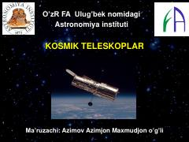

KTTeleskoplarning yaratilish tarixi va ularning astronomiyadagi ahamiyati haqida ilmiy ma'ruza.
Ushbu ma'ruza matni teleskoplarning yaratilish tarixi, turlari va ularning astronomik tadqiqotlardagi o'rni haqida ma'lumot beradi. Shuningdek, elektromagnit nurlanish spektrlari va teleskoplarning asosiy vazifalari ilmiy nuqtai nazardan yoritilgan.